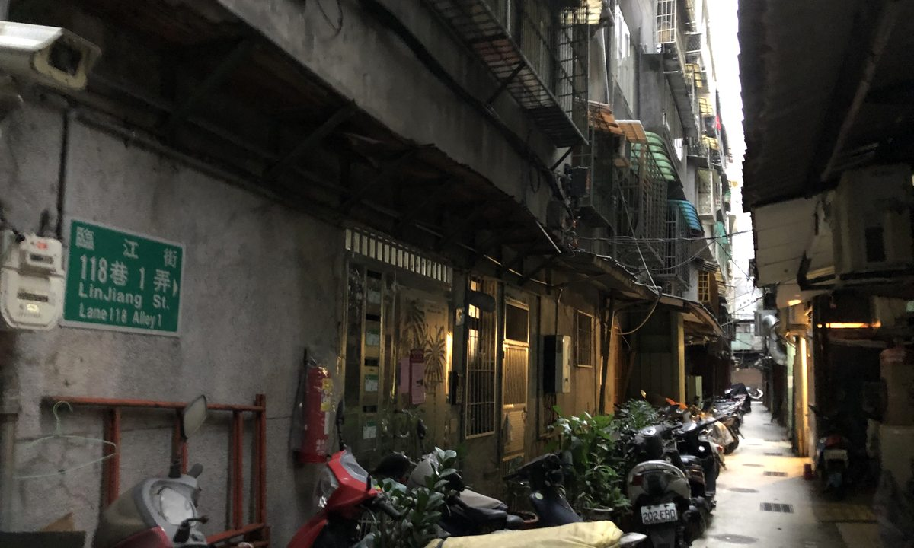

最新
城聞
晚報CITY EVENING NEWS
晚報CITY EVENING NEWS
晚報
—
模擬新聞版
售價 NT$20
—
模擬新聞版
售價 NT$20
獨家台北偵辦中
案件載入中

案情模擬示意圖
左邊仍可新增你自己的素材；右邊現在顯示「真正會參與生成的完整池」，包含內建、刑事局分類庫與你的自訂項目。
照片會在瀏覽器中縮圖後保存。若選「證物照片」，主標籤會自動加入證物關鍵字；其他標籤用來做模糊配對，例如「紅色雨傘」也能配到標籤含「雨傘」的照片。
按「網路抽一案」會一次完成：抓取 → 自動拆解 → 建立母案 → 立刻重組新聞，不需要再去按「拆解」。下方內建語料則可另外匯入自己的素材庫。
網路抽案不用來這裡。 只有你想自己貼 Dcard、新聞網站或其他文章時，才使用這一頁。貼入後可人工檢查解析結果再存成母案。
把關鍵字、自訂母案與自訂照片一起備份成 JSON。照片多時檔案會比較大。
匯入會合併資料；相同關鍵字或相同照片 ID 不會重複加入。
